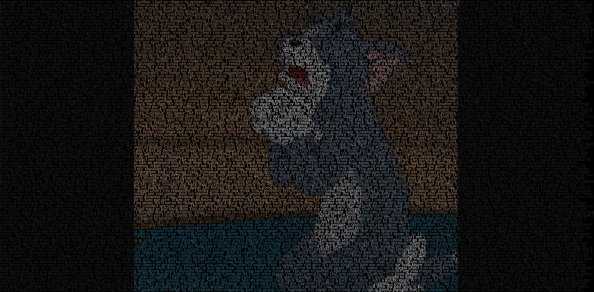
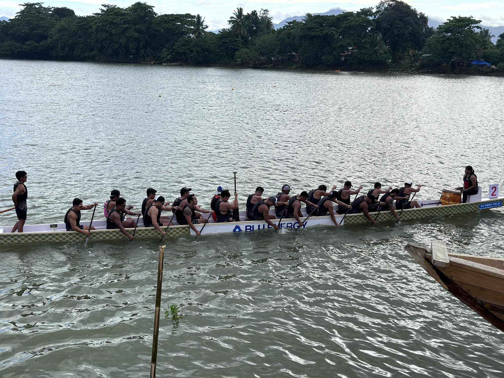

CSS-Portrait
To punish and enslave.(nag-beg)
Technologies used: Visual Studio Code, HTML, CSS
GitHub RepositoryMY SPORTS
Dragon boating is a team water sport where paddlers race in long boats decorated with dragon heads and tails. Originating from ancient Chinese traditions, it involves a crew of paddlers, a drummer to keep the rhythm, and a steerer to guide the boat. Today, dragon boating is enjoyed worldwide, known for its emphasis on teamwork, fitness, and cultural heritage.
 GitHub Repository